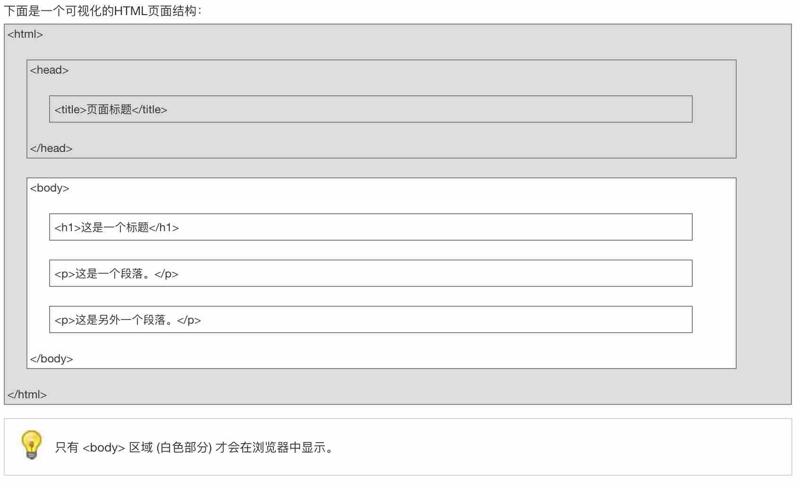

这几天使用hexo-theme-matery的主题搭建Blog时，发现主题的很多设计不是很喜欢。所以就想自己动手改一下，于是也就有了这篇博客。在讲修改之前先说一下如果你和我一样也是0基础，却想要修改别人的主题，要做哪些准备。
准备工作：
我们想要展示一个blog，所有的工作最终都是为了要生成html的网页文件。所以我们需要学习一点html的概念。
HTML 是用来描述网页的一种语言。是一种标记语言。css定义了网页的样式，而js定义了网页的行为。
你可以通过下面的链接，快速学习一下 html、css 和 js：
这里我把一些很关键的点列出来。这样就算你不去学习上面的教程也能够了解到大致的原理。
HTML知识点：
1. HTML网页结构

所以这就是为什么会看到很多教程说把此段代码添加到head内。
2. 网页的布局

很多主题都通过定义以下HTML代码：<div id=”nav”>、<div class=”header”> 或者 <div id=”footer”> 来指明导航链接、头部以及尾部。当你想要修改哪些部分时，首先尝试去寻找对应区域的关键词，迅速定位要修改代码的位置。
3. HTML速查列表
当你大致了解了HTML之后。这里有一份HTML的速查列表，你可以打印它，已备日常使用：
CSS知识点：
1. CSS 语法
css定义了HTML中的元素的样式。CSS规则主要由两部分组成：选择器，以及一条或者多条声明构成：

选择器通常是你想要修改样式的 HTML 元素，声明则是你要修改属性和样式。
2. 选择器
选择器分为两种：
- ID选择器：以 “#” 来定义
- class选择器： 以 “.”来定义
以下的样式规则应用于元素属性 id=”para1”:
#para1
{
text-align:center;
color:red;
}
在以下的例子中，所有拥有 center 类的 HTML 元素均为居中。
.center {
text-align:center;
}
选择器支持嵌套，在以下的例子中，card类中所有 center 类的 HTML 元素均为居中
.card .center {
text-align:center;
}
还有一种情况，即多个元素用同样的格式，此时用逗号分隔即可。
3. CSS 实例
下面有链接里有很多实例，通过实例可以更快的了解css、js、html是如何一起工作的。
JS知识点：
通过上面的js的教程，你会发现 js和 c的语法真的很像。所以如果你会c的语法，那么基本上可以看懂js的代码。
下面重点说一下ejs，因为我用的主题就使用的ejs。
1. 什么是ejs？
EJS 是一套简单的模板语言，帮你利用普通的 JavaScript 代码生成 HTML 页面。EJS 没有如何组织内容的教条；也没有再造一套迭代和控制流语法；有的只是普通的 JavaScript 代码而已。这是官网给出的介绍。下面只列举出一些知识点，教程可以在官网上看见。
2. ejs标签含义：
<%‘脚本’ 标签，用于流程控制，无输出。<%_删除其前面的空格符<%=输出数据到模板（输出是转义 HTML 标签）<%-输出非转义的数据到模板<%#注释标签，不执行、不输出内容<%%输出字符串 ‘<%’%>一般结束标签-%>删除紧随其后的换行符_%>将结束标签后面的空格符删除
3. 引入其他模版
比如下面的代码就是将”article/list.ejs” 文件载入到当前ejs里，并传递参数count、page、list。
<%- include("article/list",{
count : locals.count,
page : locals.page,
list : locals.list
})%>
有了以上这些准备工作就基本完事了。现在你就可以去看theme中的代码了，迅速定位到要修改的位置，然后在网上找到想用的样式。修改或添加相应的代码即可。
文中主要链接整理如下，以便查阅：
今天先写到这里。之后我会讲一下，对于hexo-theme-matery主题，我做了哪些修改，供大家参考。以上如果有不正确或不清楚的地方，欢迎指正。